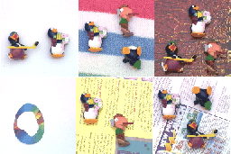
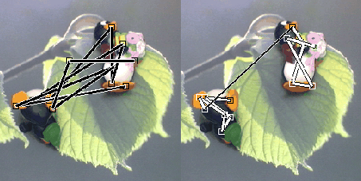
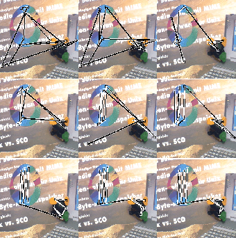

Main menu:

Abb.: Typische Szenen aus der verwendeten Galerie. Diese Szenen greifen modellhaft visuelle Eindrücke auf, wie sie bei der Exploration in einer Umwelt auftreten können. Somit treten in diesen Szenen Objekte in unterschiedlichen räumlichen Konstellationen vor unterschiedlichen Hintergründen auf.
Ausgangspunkt für die Entwicklung eines Verfahrens zur Selbstorganisation der zeitlichen Objektrepräsentation sind die Überlegungen, daß sich die Fähigkeit zur Objektidentifikation beim Menschen über eine senso-motorische Interaktion mit der Umwelt ausbildet.
Diese Interaktion wurde hier so vereinfacht, daß statische, farbige 2D-Szenen (Abb.) modellhaft diese Interaktion widerspiegeln. Stattdessen wurde die Idee der Selbstorganisation durch senso-motorische Interaktion auf das Ausbilden des wissensbasierten Abtastverhaltens übertragen.
Diese Analogie führte zu der Vorstellung, daß der oben eingeführte autonome Agent in Interaktion mit der Umwelt "Szene" operiert und auf der Basis dieser Interaktion ein Lernen durch Belohnung ausführt. Dieses Reinforcement-Lernverfahren detektiert nun, unter der Annahme, daß stabile räumliche Relationen zwischen Merkmalen Bestandteile von Objekten sind, diese stabilen Relationen durch eine Maximierung der Belohnung.
Dieses Lernverfahren führt zu entsprechenden Objektzugehörigkeitswerten und erzielt so das angestrebte, wissensbasierte Abtastverhalten. Zusätzlich nutzt das Verfahren die Auffälligkeitskarte zur sinnvollen Einschränkung des Umweltwissens, in dem es nur durch auffälligkeitsbasierte Abtastbewegungen erzeugte räumliche Relationen zwischen Merkmalen ins Umweltwissen integriert.

Abb.: Das linke Bild zeigt das auffälligkeitsbasierte Abtastverhalten. Das rechte Bild zeigt das Ergebnis der Selbstorganisation der zeitlichen Objektrepräsentation anhand des Abtastverhaltens.
Abb. 0.5 zeigt die Veränderung des Abtastverhaltens durch die Selbstorganisation der zeitlichen Objektrepräsentation nach der Präsentation der 100 Farbszenen. Dieses Ergebnis entspricht der Zielstellung, einer Verhaltensänderung durch Selbstorganisation.

Abb.: Verlauf der Selbstorganisation.
Zur Illustration des Verlaufs wurden nach jeweils 0, 20, 30, 40,50, 60, 70, 80 und 90 Szenen
(von links nach rechts und oben nach unten) die Gewichte abgespeichert und auf der Grundlage dieser Gewichte das Abtastverhalten der Modellarchitektur für die gleiche Szene ermittelt.
Die Simulationsergebnisse zur Selbstorganisation zeigen, daß die Idee eines lernenden Agenten in einer Umwelt ,"Szene" erfolgreich auf die 2D-Szenen angewendet werden konnte.
Die wesentliche Eigenschaft des Verlaufs der Selbstorganisation ist eine sukzessive Verhaltens- änderung von rein auffälligkeitsbasiertem zu wissensbasiertem Abtastverhalten.
Das Lernverhalten weist Ähnlichkeiten mit experimentellen Befunden aus der Entwicklungspsychologie auf.